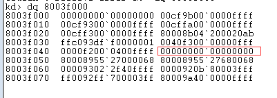
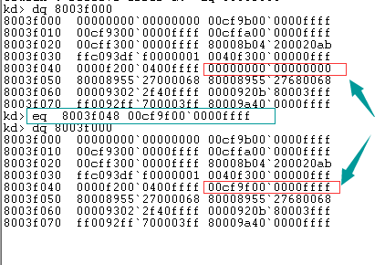
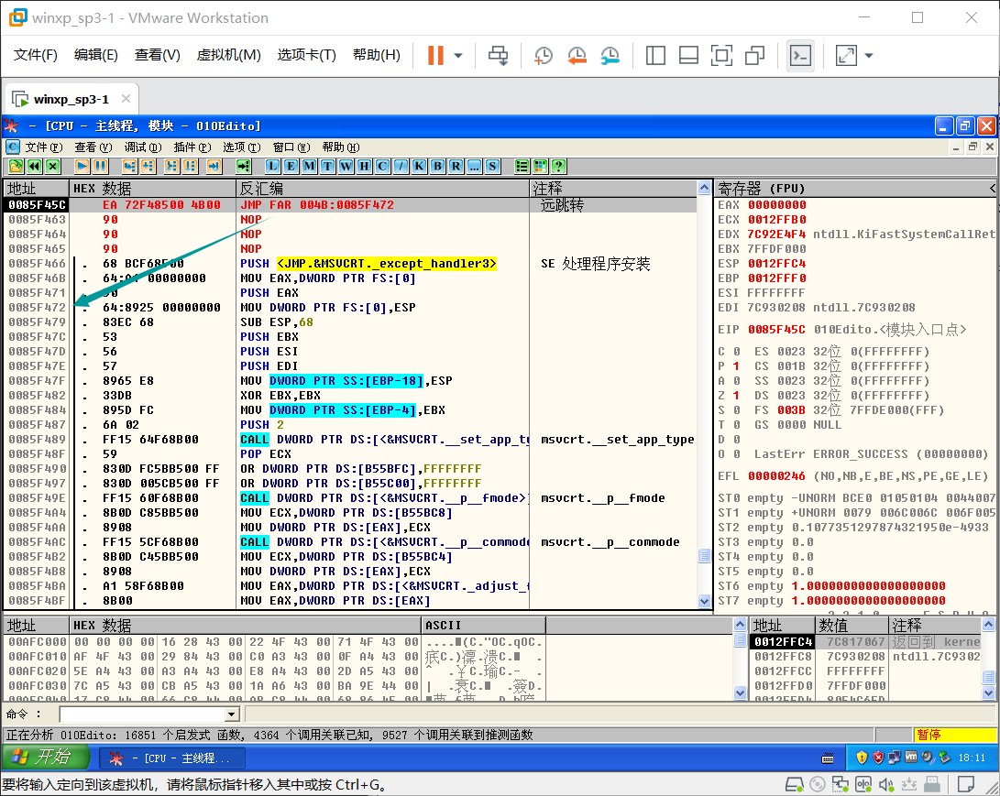
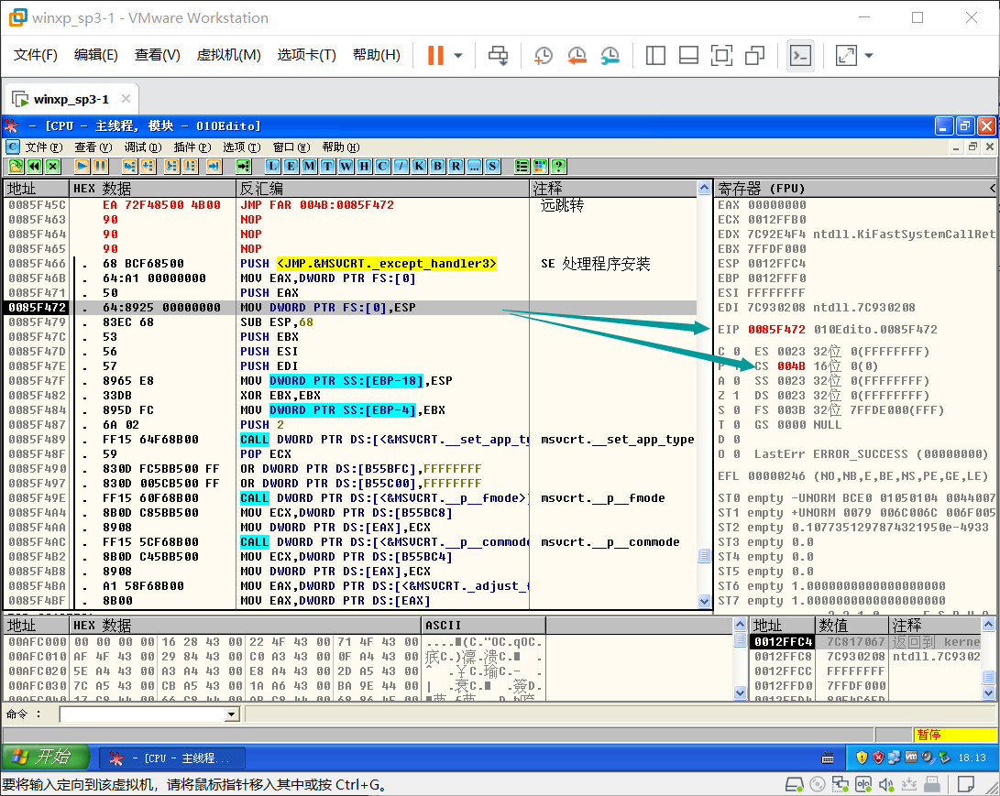
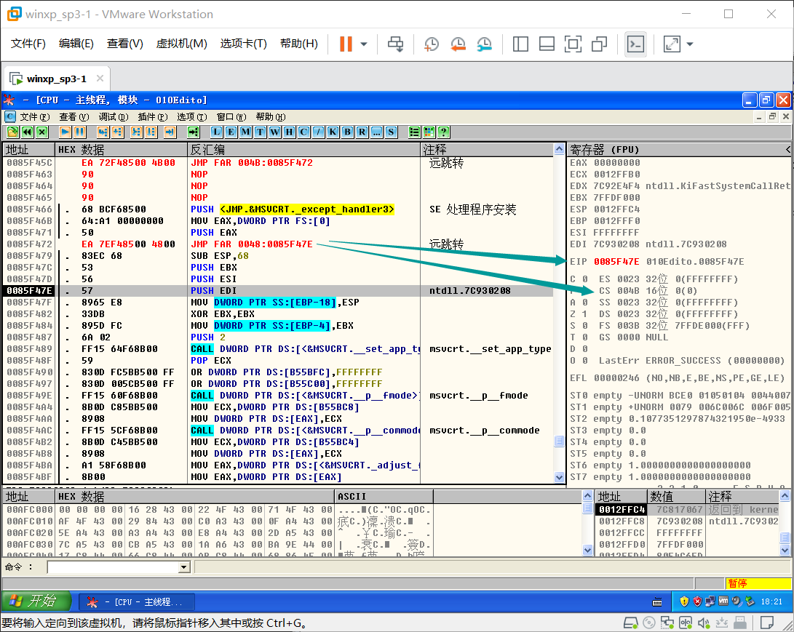

# 代码跨段跳转
# 要点回顾
段寄存器:ES,CS,SS,DS,FS,GS,LDTR,TR
除 CS 外，其他的段寄存器都可以通过 MOV,LES,LSS,LDS,LFS,LGS 指令进行修改
思考：CS 为什么不可以直接修改呢？
CS 的改变意味着 EIP 的改变，改变 CS 的同时必须修改 EIP, 所以我们无法使用上面的指令来进行修改
# 代码段跳转流程
段间跳转分为两种情况：
要跳转的段是一致代码段
要跳转的段是非一致代码段
同时修改 CS 和 EIP 的指令:
| 指令 | 含义 |
|---|---|
| JMP FAR | 远跳转 |
| CALL FAR | 远调用 |
| RETF(return far) | 远返回 |
| INT(interrupt) | 中断 |
| IRET(interrupt return) | 执行到中断程序或过程的远返回 |
只改变 EIP 的指令：
| 指令 | 含义 |
|---|---|
| JMP | 跳转 |
| CALL | 调用 |
| JCC(jump condition code) | 跳转指令状态码 / 条件跳转 |
| RET | 返回 |
# 执行流程
JMP FAR 指令
指令格式JMP Selector:Offset
如： JMP 0x20:0x00452610
Selector 为段选择子
Offset 为要跳转的偏移
思考：CPU 如何执行 JMP 0x20:0x004183D 这行指令
- 1）段选择子拆分
0x20 二进制：0000 0000 0010 0000 即
RPL = 00
TI = 0
Index = 4
- 2）查表得到段描述符
TI=0：查 GDT 表
Index=4：找到对应的段描述符
四种情况可以跳转：
代码段
调用门
TSS 任务段
任务门
- 3）权限检查
一致代码段：要求 CPL >= DPL
非一致代码段：要求 CPL == DPL 并且 RPL <= DPL
- 4）加载段描述符
通过上面的权限检查后，CPU 会将段描述符加载到 CS 段寄存器中
- 5）代码执行
CPU 将 CS.Base + Offset 的值写入 EIP，然后执行 CS:EIP 处的代码
段间跳转到此结束
- 6）总结
一致代码段（共享的段）
特权级高的程序不允许访问特权级低的数据：核心态不允许访问用户态的数据
特权级低的程序可以访问到特权级高的数据，但特权级不会改变：用户态还是用户态
非一致代码段（普通代码段）
只允许同级访问
绝对禁止不同级别的访问：核心态不是用户态，用户态也不是核心态
注意：直接对代码段进行 JMP 或者 CALL 的操作，无论目标是一致代码段还是非一致代码段，CPL 都不会发生改变。如果要提升 CPL 的权限，只能通过调用门
# 代码跳转实验
验证 JMP FAR 指令执行的结果。自己构造一个段描述符，并使用对应的段选择子进行测试。
# 计算段选择子
使用 Windbg 找到一处未被使用的段描述符：

确定了要被构造的段描述符的地址为： 0x8003f048
根据 段描述符地址 = GDT 表首地址 + 索引 × 段描述符长度 = GDT 表首地址 + 索引 × 8 可以逆推出
索引 =（ 段描述符地址 - GDT表首地址）÷ 8
即 索引 = (0x8003f048-0x8003f000) ÷ 8 = 0x48 ÷ 8 = 72 ÷ 8 = 9
既我们的段选择子的索引（Index）为 9，查询（Ti=0）GDT 表，请求特权（RPL=0b11）等级为 3。
得到： 0000 0000 0100 1011 既 0x4B
# 构造段描述符
| 数据位 | 31-24 | 23 | 22 | 21 | 20 | 19-16 | 15 | 14-13 | 12 | 11-8 | 7-0 |
|---|---|---|---|---|---|---|---|---|---|---|---|
| 含义 | Base | G | D/B | 0 | AVL | Seg.Limit | P | DPL | S | Type | Base |
| 解释 | 基地址 | 粒度 | 默认操作大小 | 固定为 0 | 用于系统软件使用 | 段大小限制 | 有效位 | 特权等级 | 描述符类型 | 段类型 | 基地址 |
| 数值 | 00000000 | 1 | 1 | 0 | 0 | 1111 | 1 | 00 | 1 | 1111 | 0000000 |
| 数据位 | 31-16 | 15-0 |
|---|---|---|
| 含义 | Base Adress | Segment Limit |
| 解释 | 基地址 | 段大小限制 |
| 数值 | 0000000000000000 | 1111111111111111 |
主要修改了 DPL 为 0；段类型设置为可执行可读，可从较低特权级别调用，可访问的 代码段描述符
将上面的二进制拼接得到： 00cf9f00`0000ffff
# 写入段描述符
将构造好的段描述符写入
在 windbg 中使用指令
eq 8003f048 00cf9f00`0000ffff
eq ：edit qword ，以 qword 的数据宽度编辑修改指定地址的数据
指令格式为： eq address data
修改后再用 windbg 查看

# OD 测试指令
使用 OD 随便打开一个软件。选择一个跳转的地址。
jmp 0x4B:0x0085F472

可以看到 EIP 被修改为了 Offset (偏移)，CS 被修改为了 Selector (段选择子)。EIP 和 CS 同时被修改了。

# 尝试修改 CPL
原本的 CPL 为 3，CPL 为当前特权级别，等于 CS 和 SS 的 RPL（请求特权级别）
前面的其它操作不变，将段选择子的请求特权级别修改为 0
即将段选择子修改为
| Index | TI | RPL | |
|---|---|---|---|
| 二进制值 | 0000 0000 0100 1 | 0 | 00 |
| 十进制值 | 9 | 0 | 0 |
| 含义 | 索引为 9 | 查询 GDT 表 | 请求特权等级为 0 |
得到新的段选择子为 0x48
使用 OD 执行新的指令
jmp 0x48:0x0085F47E

可以看到，CS 仍然是 0x4B，CPL 仍然没有发生改变，当前特权等级依旧为 3
也就是说 CPL 无法通过这种方式改变
# Reference
https://blog.csdn.net/qq_41988448/article/details/102579695
https://www.52pojie.cn/thread-1423484-1-1.html